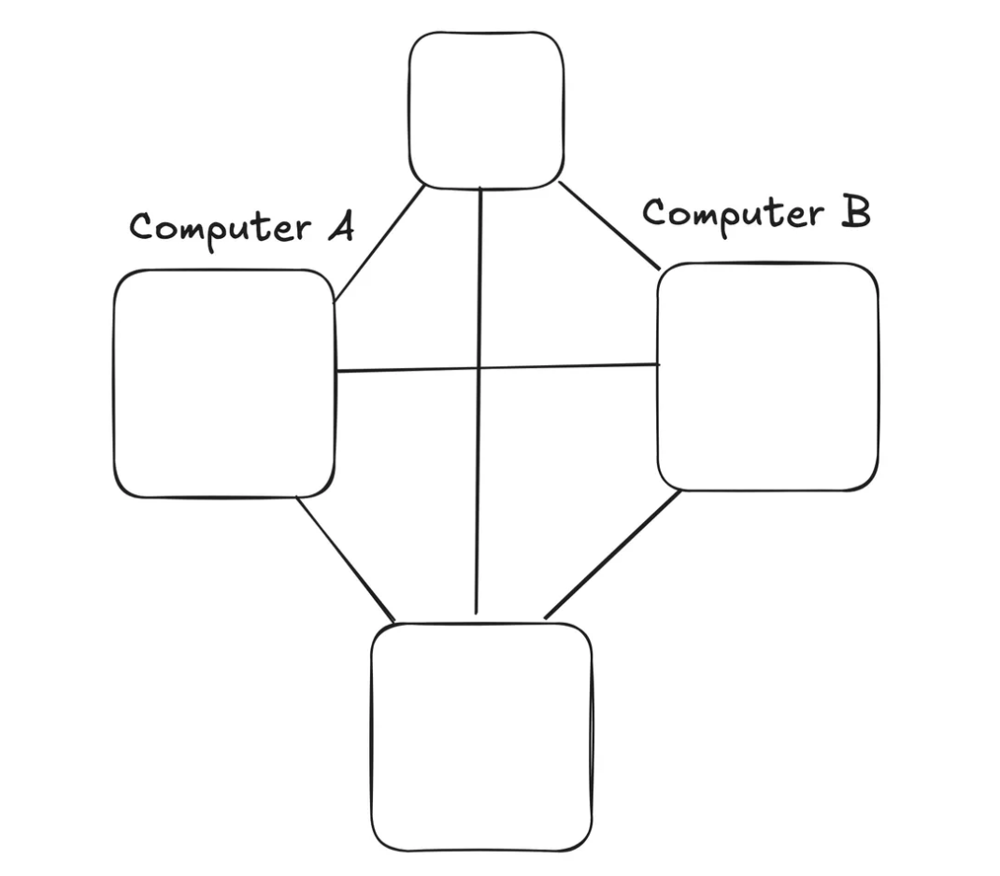
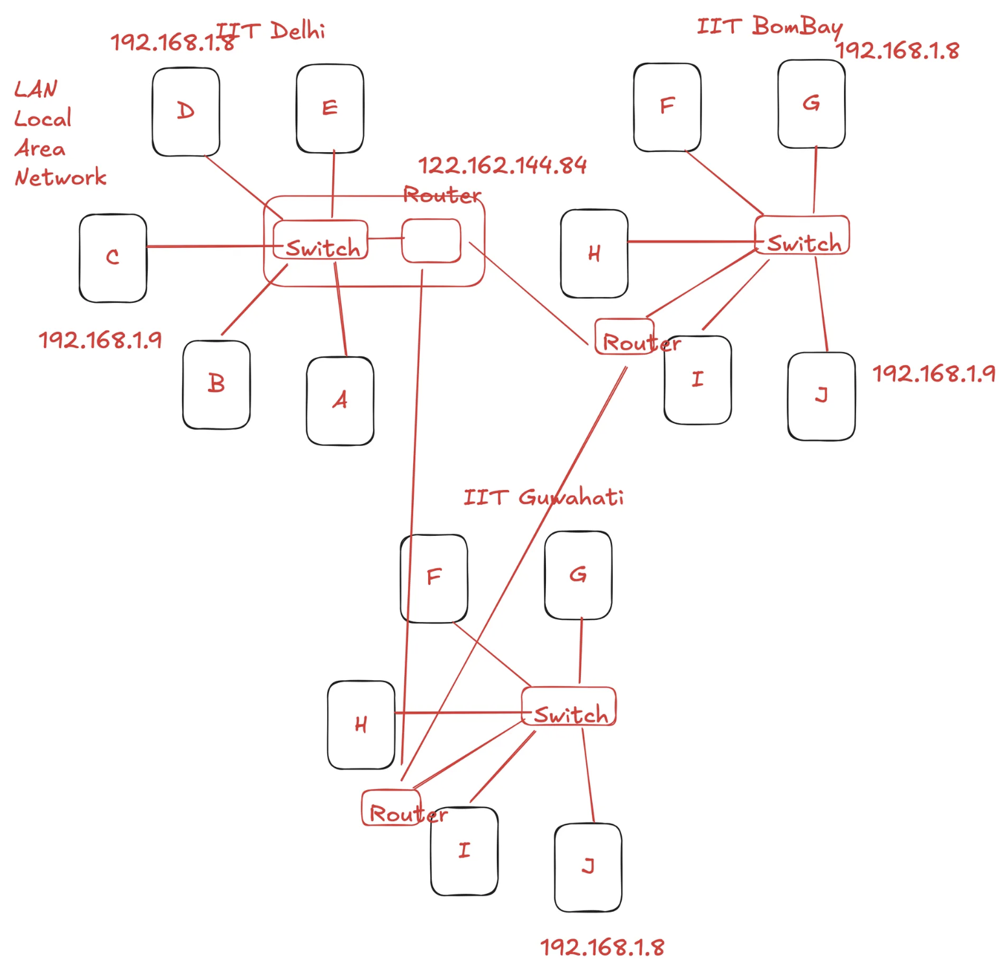
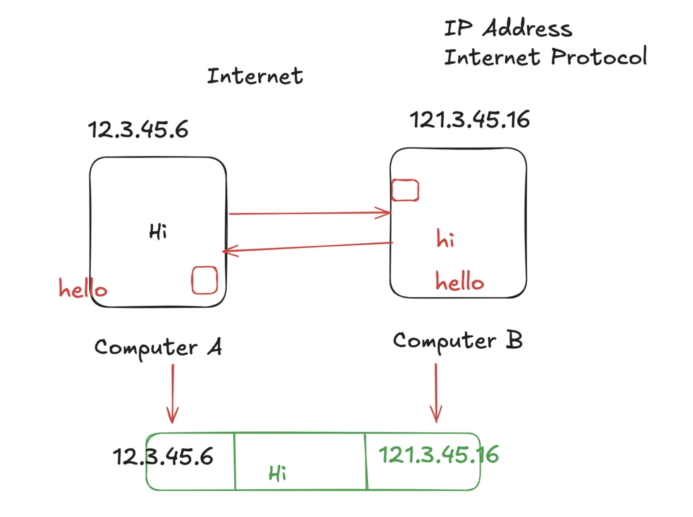
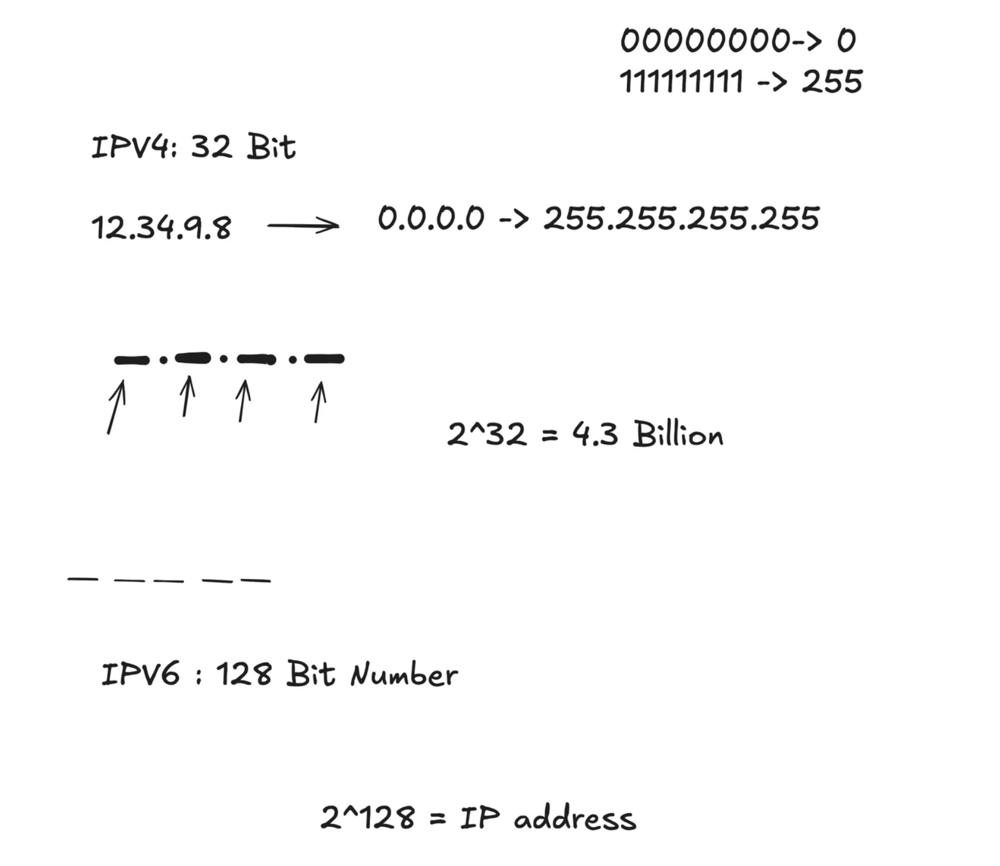
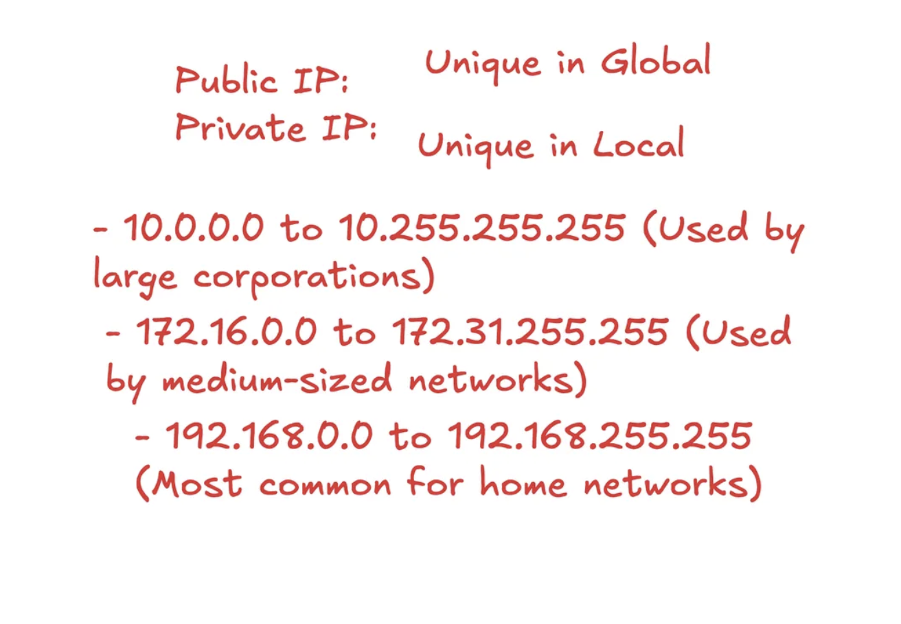
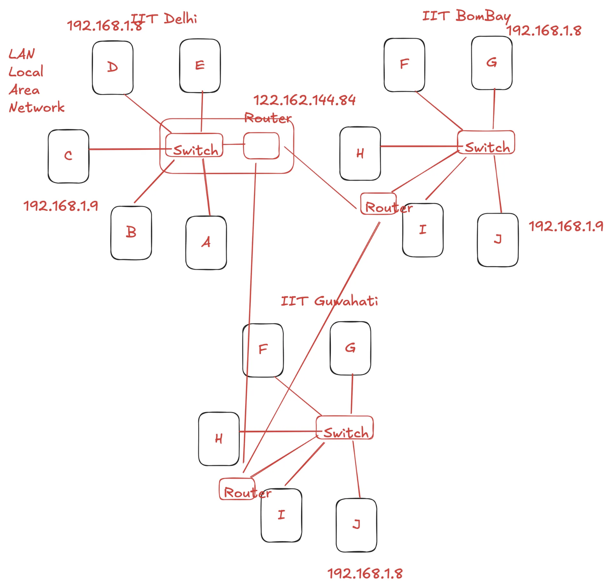
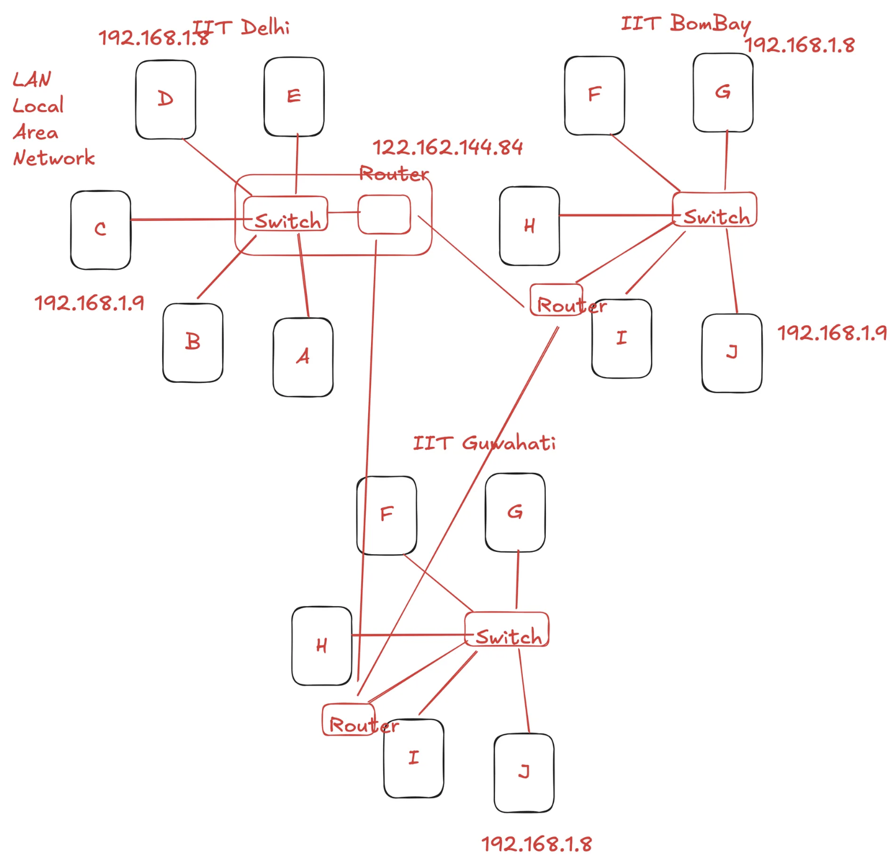

Principle 1: The Need to Share Information & The Problem of Scale


The most fundamental challenge is getting information from one computer to another.
The Problem: How can we send data between two computers that are not in the same room?
Initial Solution (Physical Transfer): The most basic method is to use a physical
device like a pen drive to copy data from one machine and paste it onto another. This works, but
it's manual, slow, and doesn't scale.
A Better Solution (Direct Connection): A more efficient approach is to connect the
two computers with a wire, like an Ethernet cable. This allows for direct, electronic data transfer.
The Problem of Scale: A direct connection fails when you add many computers. Connecting
every machine to every other machine directly is physically impossible and requires too many ports.
Solution 1 (The Local Network): To solve this, we use a central device called a
Switch.
All computers in a local area connect to this single switch,
which forwards
messages to the correct destination. This creates an efficient Local Area Network
(LAN).
Solution 2 (The Internet): To solve the problem of connecting different LANs (e.g.,
one office network to another), we use a special device called a Router.
A router's
job is to connect different networks and route traffic between them. The Internet
is fundamentally a "network of networks"—millions of private and public LANs all connected by
routers.
Principle 2: The Problem of Identity & Addressing


In a global web of millions of devices, we need a universal addressing system to find a specific computer. This
led to the creation of several types of addresses, each solving a unique problem.
The Problem: How do we send a message to a specific device among millions? We need a unique
address for every device on the network.
The Solution: The IP (Internet Protocol) Address. It’s a unique numerical
label assigned to each device, allowing data to be routed to it. There are two versions:
IPv4:
The classic format, which is a 32-bit number written as four
decimal numbers separated by dots (e.g., 192.168.1.8). This system is limited to about
4.3 billion unique addresses. We have run out of available IPv4 addresses because
the number of internet-connected devices far exceeds this limit.
IPv6:
The next generation, created to solve the address shortage. It is a
128-bit number written in hexadecimal format (e.g.,
2001:0db8:85a3::8a2e:0370:7334). This provides a virtually inexhaustible number of
addresses (340 undecillion).
Public vs. Private IP Addresses

The Problem: The shortage of IPv4 addresses meant we couldn't give a unique, global address
to every single device.
The Solution: A clever workaround was to create two types of IP addresses.
Public
IP: A globally unique address assigned to your network's router by your
Internet Service Provider (ISP). Think of this as your company's main, public phone number. It must
be unique across the entire internet.
Private
IP: A local-only address used within your private network (e.g., your home
Wi-Fi). Think of this as an employee's internal 4-digit extension number. These addresses only need
to be unique on your local network and are reused in millions of other homes and offices. The most
common range for home networks is 192.168.0.0 to 192.168.255.255.
The Problem: IP addresses are often temporary and dynamic; they can be taken away when you
disconnect and reassigned to someone else. This creates a massive security flaw: if a server's reply is
delayed, your sensitive data could be sent to a different device that was assigned your old IP address.
The Solution: The MAC (Media Access Control) Address. It is a
permanent, 48-bit physical serial number burned into a device's network hardware by the
manufacturer. It cannot be changed or taken away.
Function: Data packets include both the IP and MAC addresses. This ensures that
even if an IP is reassigned, the data is only delivered to the device with the correct, matching MAC
address, preventing misdelivery.
Multiple MAC Addresses: A single device has multiple MAC addresses—one for each way
it can transfer data (e.g., Wi-Fi, Ethernet, Bluetooth, AirDrop).
The Problem: Data arrives at the correct computer (thanks to IP and MAC), but the computer
is running multiple applications (e.g., browser tabs for YouTube, Instagram, etc.). How does the device know
which specific application should receive the data?.
The Solution: The Port Number. It's a numerical identifier that directs
network traffic to the correct service on a machine. It is a 16-bit unsigned integer,
ranging from 0 to 65535.
Well-Known Ports (0-1023): Reserved for standard services like HTTP (port
80) and HTTPS (port 443).
Registered Ports (1024-49151): For specific applications, like MongoDB
(port 27017).
Dynamic/Ephemeral Ports (49152-65535): Used for temporary, client-side connections,
like when your browser makes a request.
Principle 3: Using Names Instead of Numbers
The Problem: Humans are good at remembering names (like google.com) but bad at
remembering long strings of numbers (IP addresses). We need a system to translate the names we use into the
addresses computers need.
The Solution: The DNS
(Domain Name System). It acts like the phonebook of
the internet, translating human-friendly domain names into computer-friendly IP addresses.
The DNS Lookup Process: When you type a domain name, your computer follows a hierarchical
search to find the IP address:
Local Cache: First, your computer checks its own cache (browser, OS) to see if it
already knows the IP.
Recursive Resolver: If not found locally, it asks a DNS Resolver (usually from your
ISP). This server promises to do all the work to find the final answer.
Root Server: The resolver asks one of the 13 logical Root Servers, which points it
to the correct server for the top-level domain (like .com).
TLD Server: The resolver then asks the Top-Level Domain (TLD) server (e.g., the
.com server), which points it to the server that is the final authority for that
specific domain.
Authoritative Name Server: Finally, the resolver asks the domain's Authoritative
Name Server, which holds the actual IP address and provides the final answer.
Response: The answer travels back to your computer, getting cached along the way to
speed up future requests.


 
